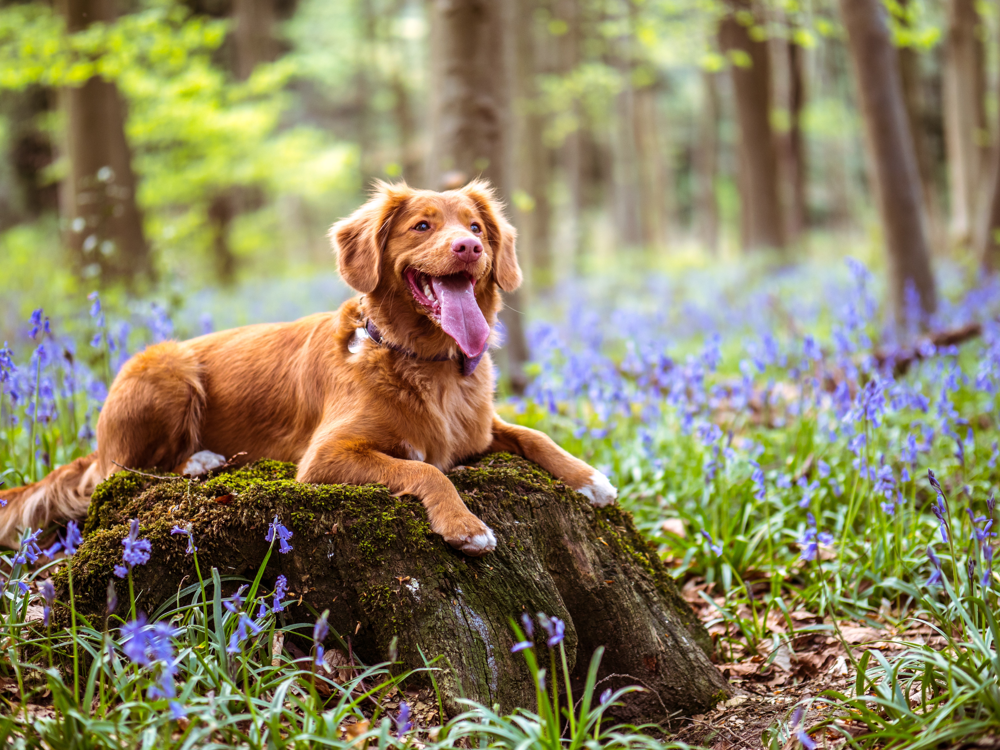
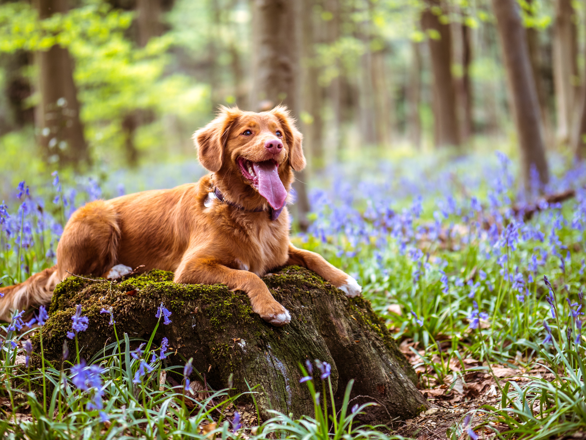

Laula

Introducing Laula: Your Future Adventure Buddy!
Meet Laula, a radiant and spirited 2.5-year-old female dog who is ready to fill your life with love, joy, and unforgettable adventures. Laula is a stunning golden retriever mix with a beautiful light brown coat that shimmers in the sunlight. She's not just a pretty face; Laula has a heart of gold to match her luscious fur.
Laula's sweet and affectionate nature is bound to steal your heart from the moment you meet her. She's a true cuddle enthusiast and is always up for snuggling on the couch after a long day. Her warm, expressive eyes will melt away any stress, and her gentle demeanor will make you feel like you've found your best friend for life.
But don't let her love for relaxation fool you! Laula is also a spirited adventurer who adores the great outdoors. Whether it's hiking through lush forests or strolling along a serene lakeside, she's always excited to join you on your outdoor escapades. With Laula by your side, every walk becomes an exploration, and every hike transforms into a thrilling expedition.
Laula is not just a dog; she's a companion who is ready to share your life's journey, from lazy Sunday mornings to breathtaking mountain summits. She's a wonderful blend of charm, playfulness, and loyalty, making her the ideal addition to any loving home.
If you're seeking a loyal and affectionate companion who can keep up with your active lifestyle while providing all the love and cuddles you need, Laula is the perfect match for you. Don't miss out on the opportunity to welcome this beautiful golden retriever mix into your life. Adopt Laula today and embark on a lifetime of shared adventures and endless love.

 
